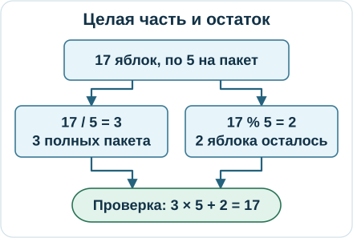

Первые программы Kotlin: вычисления и строки
Начинаем общий блок задач под номерами 1–6. Первые две — про прямоугольник и перевод минут. Работайте в среде, которая запустилась на задании 34. Входные данные задавайте в начале программы, чтобы менять их между запусками.
Вычисления и вывод результата
Пусть длина стороны квадрата \(a = 2.5\) см. Его периметр \(P = 4a\). Сохраним сторону и результат в отдельных переменных.
fun main() {
val side = 2.5
val perimeter = 4 * side
println("Периметр: $perimeter см")
println("Площадь: ${side * side} см²")
}
Первая строка выводит Периметр: 10.0 см, вторая — Площадь: 6.25 см². В строковом шаблоне $perimeter подставляет переменную, а ${side * side} подставляет результат выражения. Операция * означает умножение. Скобки меняют порядок действий, например 2 * (3 + 4) даёт 14.
Целочисленное деление и остаток
Из 17 яблок раскладываем по 5 яблок в пакет. При делении двух целых чисел / даёт число полных пакетов, а % — остаток.

fun main() {
val apples = 17
val perBag = 5
val bags = apples / perBag
val left = apples % perBag
println("Полных пакетов: $bags")
println("Осталось яблок: $left")
}
Получатся 3 пакета и 2 яблока. Проверка обратным действием: \(3 \cdot 5 + 2 = 17\). Если нужно дробное частное, один операнд должен быть дробным. Например, 17 / 5.0 даёт 3.4.
Задачи 1 и 2
- Прямоугольник. Даны длина и ширина в сантиметрах. Найдите периметр и площадь, выведите оба значения с единицами измерения. Проверьте пары сторон
7.5и4.0, затем3.0и3.0. До запуска вычислите ответы по формулам \(P = 2(a + b)\) и \(S = ab\). - Часы и минуты. Дано целое неотрицательное число минут. Выведите количество полных часов и оставшихся минут отдельно. Проверьте
135, затем60минут. Для полного часа и остатка используйте разные операции.
Как сохранить результаты
Сохраните каждую задачу в отдельном файле, например Task01.kt и Task02.kt. Запишите номер задачи, проверенные данные и фактический вывод. Если запустить программу не удалось, пометьте свои расчёты «ожидаемый результат, без запуска». Список пригодится для общего показа в конце задания 37. Дальше — условия и циклы в задачах 3 и 4.